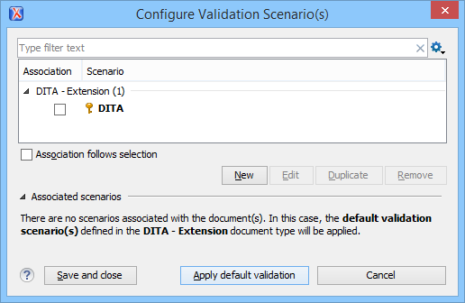
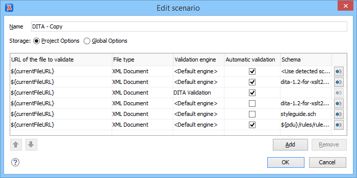
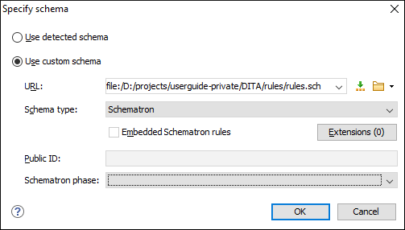

Editing a Validation Scenario
To edit an existing validation scenario, follow these steps:
-
Select the Configure Validation Scenario(s) from the
 Validation toolbar drop-down menu, or from the
menu (or the Validate submenu when invoking the
contextual menu on a file in the Project view).
The Configure Validation Scenario(s) dialog box is displayed. It contains built-in and user-defined scenarios. The built-in scenarios are organized in categories depending on the type of file they apply to and you can identify them by a yellow key icon that marks them as read-only. The user-defined scenarios are organized under a single category. The default scenarios for the particular framework are rendered in bold.Note: If a master file is associated with the current file, the validation scenarios defined in the master file, along with any Schematron schema defined in the default scenarios for that particular framework, are used for the validation. These take precedence over other types of validation units defined in the default scenarios for the particular framework. For more information on master files, see Master Files Support or Working with Modular XML Files in the Master Files Context.
Validation toolbar drop-down menu, or from the
menu (or the Validate submenu when invoking the
contextual menu on a file in the Project view).
The Configure Validation Scenario(s) dialog box is displayed. It contains built-in and user-defined scenarios. The built-in scenarios are organized in categories depending on the type of file they apply to and you can identify them by a yellow key icon that marks them as read-only. The user-defined scenarios are organized under a single category. The default scenarios for the particular framework are rendered in bold.Note: If a master file is associated with the current file, the validation scenarios defined in the master file, along with any Schematron schema defined in the default scenarios for that particular framework, are used for the validation. These take precedence over other types of validation units defined in the default scenarios for the particular framework. For more information on master files, see Master Files Support or Working with Modular XML Files in the Master Files Context.Figure 1. Configure Validation Scenario Dialog Box The top section of the dialog box contains a filter that allows you to search through the scenarios list and the Settings button allows you to configure the
following options:
Settings button allows you to configure the
following options:- Show all scenarios
- Select this option to display all the available scenarios, regardless of the document they are associated with.
- Show only the scenarios available for the editor
- Select this option to only display the scenarios that Oxygen XML Editor can apply for the current document type.
- Show associated scenarios
- Select this option to only display the scenarios associated with the document you are editing.
 Import
scenarios
Import
scenarios- This option opens the Import scenarios dialog box that allows
you to select the scenarios file that contains the scenarios you
want to import. If one of the scenarios you import is identical to an existing scenario,
Oxygen XML Editor ignores it. If a conflict appears (an imported scenario has the
same name as an existing one), you can choose between two options:
- Keep or replace the existing scenario.
- Keep both scenarios. Note: When you keep both scenarios, Oxygen XML Editor adds imported to the name of the imported scenario.
- Export selected
scenarios
- Use this option to export selected scenarios individually. Oxygen XML Editor creates a scenarios file that contains the exported scenarios. This is useful if you want to share scenarios with others or export them to another computer.
-
Select the scenario and click the Edit button. If you try to
edit one of the read-only built-in scenarios, you will receive a warning message
that Oxygen XML Editor needs to creates customizable duplicate (you can also use the
Duplicate button).
The Edit scenario dialog box is displayed and it lists all the validation units for the scenario.
Figure 2. Edit Validation Scenario This scenario configuration dialog box allows you to configure the following information and options:- Name
- The name of the validation scenario.
- Storage
- You can choose between storing the scenario in the Project Options or Global Options.
- URL of the file to validate
- The URL of the main module that includes the current module. It is also the
entry module of the validation process when the current one is validated. To edit
the URL, double-click its cell and
specify the URL of the main module by doing one of the following:
- Enter the URL in the text field or select it from the drop-down list.
- Use the
 Browse drop-down button to browse for a local, remote, or
archived file.
Browse drop-down button to browse for a local, remote, or
archived file. -
Use the
 Insert Editor Variable button to
insert an editor
variable or a custom editor
variable.
Insert Editor Variable button to
insert an editor
variable or a custom editor
variable.Figure 3. Insert an Editor Variable 
- File type
- The type of the document that is validated in the current validation unit. Oxygen XML Editor automatically selects the file type depending on the value of the URL of the file to validate field.
- Validation engine
-
You can select one of the engines available in Oxygen XML Editor for validation of the particular document type.
Default engine means that the default engine is used to run the validation for the current document type, as specified in the preferences page for that type of document (for example, XSLT preferences page, XQuery preferences page, XML Schema preferences page).
The DITA Validation engine performs DITA-specific checks in the context of the specifications (it is similar to the checks done with the DITA Maps Manager Validate and Check for Completeness action, but for a local file rather than an entire DITA map).
The Table Layout Validation engine looks for table layout problems (for more information, see Report table layout problems).
- Automatic validation
- If this option is selected, the validation operation defined by this row is also applied by the automatic validation feature. If the Automatic validation feature is disabled in the Document Checking preferences page, then this option is ignored, as the preference setting has a higher priority.
- Schema
- This option becomes active when you set the File type to XML Document and allows you to specify the schema used for the validation unit.
 Specify
Schema
Specify
Schema-
Opens the Specify Schema dialog box that allows you to set a schema to be used for validating XML documents.
Figure 4. Specify Schema Dialog Box The Specify Schema dialog box contains the following options:
- Use detected schema
- Uses the schema detected for the particular document.
- Use custom schema
- Allows you to specify the schema using the following options:
-
URL - Allows you to specify or select a URL for
the schema. It also keeps a history of the last used schemas. The URL
must point to the schema file that can be loaded from the local disk
or from a remote server through HTTP(S), FTP(S) or a custom protocol. You can specify the URL
by using the text field, the history drop-down, the Insert Editor Variables button, or the
browsing actions in the Browse drop-down
list.
- Schema type - Select a possible schema type from this combo box that is populated based on the extension of the schema file that was entered in the URL field. The possible schema types are: XML Schema, DTD, Relax NG, Relax NG Compact, Schematron, or NVDL.
- Embedded Schematron rules - If you have selected XML Schema or Relax NG schemas with embedded Schematron rules and you want to use those embedded rules, select this option.
- Extensions- Opens a dialog box that allows you to specify Java extension JARs to be used during the validation.
- Public ID - Allows you to specify a public ID if you have selected a DTD.
- Schematron phase - If you select a Schematron schema, this drop-down list allows you to select a Schematron phase that you want to use for validation. The listed phases are defined in the Schematron document.
-
URL - Allows you to specify or select a URL for
the schema. It also keeps a history of the last used schemas. The URL
must point to the schema file that can be loaded from the local disk
or from a remote server through HTTP(S), FTP(S) or a custom protocol. You can specify the URL
by using the text field, the history drop-down, the
 Move
Up
Move
Up- Moves the selected validation unit up one spot in the list.
 Move Down
Move Down- Moves the selected validation unit down one spot in the list.
- Add
- Adds a new validation unit to the list.
- Remove
- Removes an existing validation unit from the list.